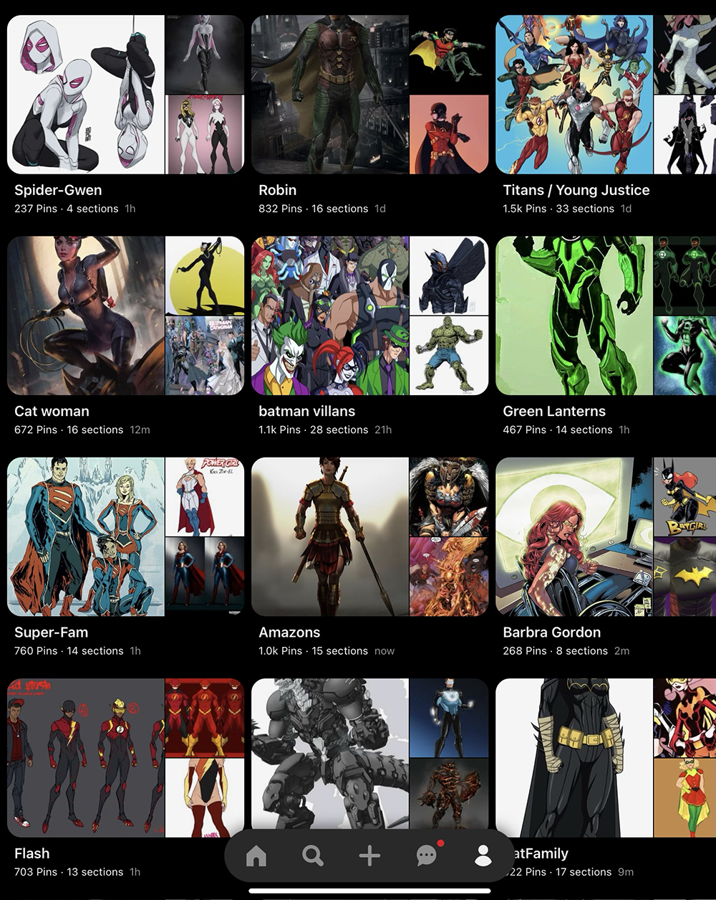

Welcome to The Feed!
Hoopla

This is an image from a Nightwing comic I was reading on an app called Hoopla. I am a huge comic book and Hoopla has free digitizations of almost every book in the SF public library system, so I am frequently reading something on there during transit or my downtime.
Alarm

Sometimes my alarm clock is the only thing stopping me from sleeping half the day, so I’m trying to be less reliant on it. However, at the same time, I’m also trying to give it other practical uses, such as tracking my breaks during work time.
Lockscreen
This has been my lockscreen for as long as I can remember, and I like that I’ve gotten used to it so it's not a distraction everytime I open my phone. But it's also a cool live photo I took on the bridge, so it's still pleasant to look at.
Photo
Photography used to be a big hobby of mine, especially during COVID. So every now and then I’ll just snap a picture of something I think looks interesting then play around with the filters a bit for fun.
Concerts

This is a screenshot I took of the concert info for a band I like and was considering seeing live. I am a huge concert fan and am always looking for new tour dates or events from my favorite artists.
Spotify

I absolutely love Spotify. It is honestly one of my most used apps simply because I am pretty much always listening to something. Music is a big part of my life and I am always looking for new artists as well as trying to keep up with the ones I already love, so the interface is really good for that.
MAX
I really like the selection of movies and shows MAX has, so I am on there quite frequently. I also watch a lot of those shows and movies with friends and family, so that adds a nice social layer to my interaction with the platform.
Canvas

I have had to deal with some pretty bad educational platforms, so as far as online resources go Canvas is actually pretty reliable and intuitive. This is great considering I am on there pretty much everyday during the school year tracking my assignments.
Pintrest
Pintrest is extremely useful for artistic inspiration when I'm drawing. I'm also just a huge fan of chracter design, and love seeing different artists interpretations of the same characters.
Sketchbook
I have been drawing ever since I was little, and have been drawing digitallyb since highschool. Sketchbook is extremely useful for experimenting with different designs, and layers helps me compare different costume elemts in drawing such as this one.